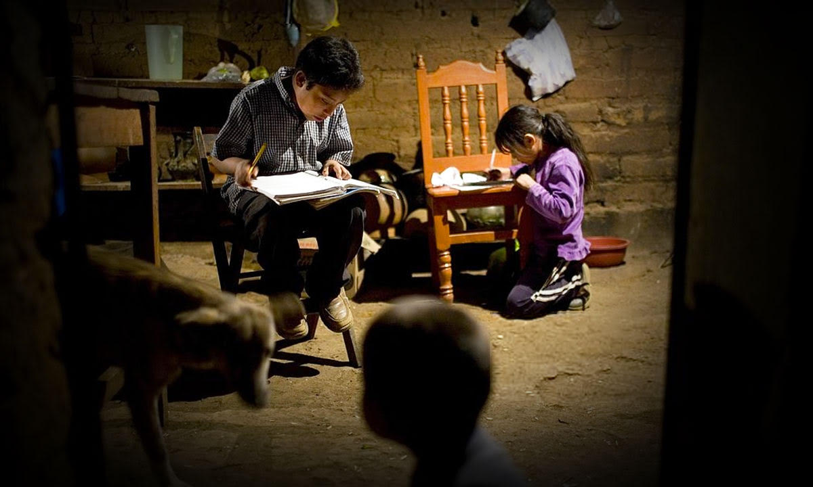

¿Cuáles son los tipos de pobreza que existen?
Pobreza material. Se da en los países que presentan un índice de exclusión social más bajo. Pobreza rural. Pobreza urbana. Pobreza social. Pobreza infantil. Pobreza relativa. Pobreza estructural
¿Cuáles son los problemas relacionados con la pobreza?
Malnutrición. Abandono escolar y trabajo infantil. Inseguridad ciudadana y aumento de la prostitución.
¿Por qué se debe erradicar la pobreza?

Desarrollo y nutrición en la primera infancia. ... Acceso universal a educación de calidad. ... Cobertura universal de salud. ... Tributación progresiva. ... Infraestructura rural.
¿Cuáles son las principales causas de la pobreza?
1:que los niños no se alimenten bien por que no tienen comida y se les baja las defensas La pobreza es un mal que cada vez se extiende más. Muchos son los gobiernos que han intentado e intentan acabar con la pobreza, sin embargo, la realidad muestra que no se ha erradicado y falta mucho para poder hacerlo. Ahora bien ¿Cuáles son las causas de esta situación y por qué no se podrá eliminar nunca? Podríamos citar cuatro causas, aunque sin duda a usted le vendrán más razones a la mente. Una de ellas es el gran crecimiento poblacional. De acuerdo con el Fondo de Población de la ONU, nacen todos los años 80 millones de bebés, lo cuál indica que en poco tiempo habrá grandes problemas de vivienda. Ya de por sí, las ciudades del mundo están superpobladas, así que se espera que para el 2050 la situación esté mucho peor. Una urbanización sin límites. Cada vez más las ciudades van creciendo y creciendo. Ciudades como Sao paulo, New York, Londres y Tokio son vistas como símbolo de prosperidad y crecimiento económico. Por eso son cada vez más los que migran a esas ciudades. Como consecuencias, las zonas agrícolas se van reduciendo, disminuyendo así la cantidad de alimentos. Los desastres naturales son otra causa. Uno pudo apreciarlo en el caso de Haiti. O tal vez fuertes lluvias y consecuentes inundaciones que arrasan con las pocas propiedades que las personas posees. Terremotos, derrumbes entre otros desastres causan gran dolor a las poblaciones marginales y pobres. Por último, los conflictos políticos agravan la pobreza. Muchas personas por causa de enfrentamientos armados deben abandonar sus hogares y vivir como refugiados en otros lugares, a veces e países distintos donde no cuentan con la protección que tienen los residentes legales. Algunos viven en casas repletas de parientes, hacinados y apretados. Otros se han mudado a establos, lugares para animales sin las condiciones higiénicas necesarias. Por lo visto, estas cuestiones agravan y profundizan el talón de Aquiles de todos los gobiernos: la pobreza. 2:que los niños por intertar ayudar a sus padres para salir un poco de la pobresar se lastimen
¿Por qué es tan difícil combatir la pobreza?
La disminución de la fuerza laboral, violencia, crimen y el nulo aumento de ingresos son factores que han impedido que la pobreza extrema disminuya en México. La pobreza tiene muchas dimensiones, pero sus causas son el desempleo, la exclusión social y la alta vulnerabilidad de determinadas poblaciones a los desastres, las enfermedades y otros fenómenos que les impiden ser productivas. ... La ciencia ha contribuido de manera considerable a la erradicación de la pobreza.